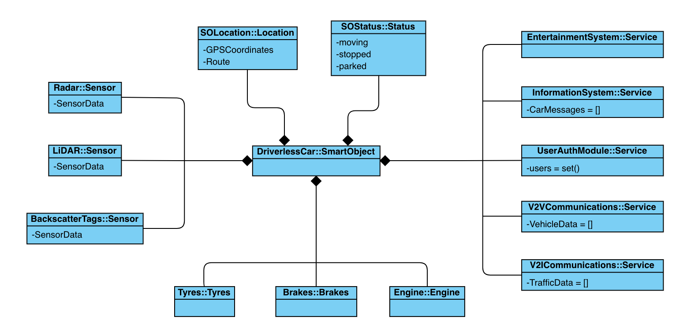
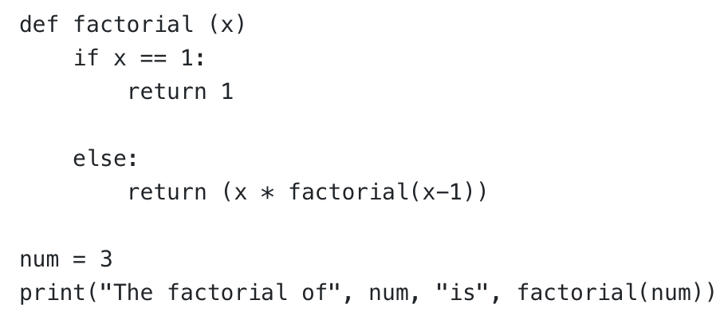

Object Oriented
Programming
My reflections on the units included within the module.
Module reflections
What?
Before starting Object Oriented Programming (OOP) module, I still felt myself more comfortable in C and procedural programming practices because that was what I was exposed to during my self-education on Computer Science. I was not aware of the advantages that comes with OOP, and had a misconception that OOP was only a style of programming adopted by some developers purely due to personal preference.
As for the Software Development Life Cycle (Kneuper, 2017), I was inclined to ignore the steps like planning, requirement analysis and design and attach too much importance to the implementation. According to me, actual practice of coding was of utmost importance and the design process was nothing more than a subtle step which was mitigated somehow by sketching a quick diagram or a pseudocode on a piece of paper. Likewise, testing was just the final step of the development process in which the developer would assume the role of the end-user and used the software in every possible way to detect shortcomings and defects of the software, if any.
So what?
My overreliance to the procedural programming practices naturally used to result in a code that’s not flexible and far from being elegant. But when I got out of my comfort zone and got to know essential concepts of OOP like encapsulation, polymorphism (Åkerblom & Wrigstad, 2015), or duck-typing (Milojkovic et al., 2017), I discovered the true power of OOP. However, even after a few weeks I still felt awkward and sometimes distressed because I was having a real difficulty encapsulating the attributes and methods together into a class, instantiate multiple objects, make objects communicate with each other and understanding the necessity of abstract base classes, interfaces, and getter/setter methods. Nevertheless, after carefully reviewing the Codio modules, spending hours on coding practices and especially working on the System Implementation which involved developing a software for a driverless car which is comprised of multiple components (objects) interacting with each other, I started to feel more comfortable with OOP and I gradually adopted a new mindset which helped me to think about the components of programs as objects in real life.
Owing to this transformation, my approach to programming has changed drastically. Even in the requirement analysis and design phases, I intuitively started to think about the classes and objects and how they would interact with each other. One of the major factors which helped me to adopt this point of view was the emphasis put in this module on the design process and specifically the Unified Modelling Language (UML). Thanks to the various diagrams it provides (Rumbaugh et al., 2016), it makes it far easier to design the system, identify classes and define the interactions between them. Especially, the class diagram was the one which helped me a lot to design and implement my driverless car assignment as it pushes the developer to define the classes along with their methods and attributes and more importantly, when used together with the sequence diagram, it helps to figure out how these classes would interact with each other. The class diagram also helps the developers to revise their designs if necessary, since it provides a bird’s eye view of the system. In my experience with the assignment, I found it necessary to make a few changes during the implementation phase.
Another important change in my methodology was to integrate testing in all phases of the development, as opposed to testing the software after the implementation. Learning the different levels of testing (i.e., unit tests, integration tests, functional tests, and exploratory tests) helped me to raise my awareness about the necessity to carry out tests in different phases of development. For example, during the system implementation assignment, I carried out unit tests when I finished development of a component (e.g., Traffic Sign Recognition System) in order to make sure it functions properly with given input (e.g., different traffic signs recognized successfully). Later on, I applied integration testing after the development of different components in order to test if they integrate with each other seamlessly (and in the case of the driverless car, especially with the control unit which is central to the system) and in the end, I applied functional and exploratory tests to see how all components are coming along together.
Automated testing tools and libraries (Arbuckle, 2010) are one of the most powerful features of Python. I had a chance to use pylint (Pylint, N.D.) a few times and I was amazed by the results I got.
Now what?
Now that I know the value of the design phase and more specifically, UML diagrams, and I have a hands-on experience with it, I will certainly apply what I have learnt in this module in my future projects. I also know that I should not be rigid and be prepared to change my original design if necessity arise during the implementation. It turns out that there is a fine balance between sticking to the original design and being flexible to make required amendments in it. My goal will be to keep this fine balance to deliver the functionality needed in the most efficient and robust way possible.
Even though I got a glimpse of the benefits automated testing tools can bring, I did not have the opportunity to use them adequately. Nevertheless, in the future, I intend to use automated testing along with the manual testing methods that I already apply so that I can test my code thoroughly and fine tune it as necessary.
The design patterns play an important role in the software reusability. These are time-tested, efficient time-savers that developers can benefit from. In my assignments and personal coding practices so far, I did not implement any of them. However, I am planning to do some coding practices specifically to use some of the design patterns suggested by the Gamma et al. (1994) to develop a better understanding of selecting and implementing the patterns and once I feel comfortable, I will try incorporating some of the design patterns into my bigger projects and future assignments.
References:
Åkerblom, B. & Wrigstad T. (2015) Measuring polymorphism in python programs. ACM SIGPLAN Notices. 51(2): 114-128. DOI: https://doi.org/10.1145/2816707.2816717
Arbuckle, D. (2010) Python Testing – Beginner’s Guide. 1st ed. Birmingham: Packt Publishing.
Gamma, E.; Helm, R.; Johnson, R. & Vlissides, J. M. (1994) Design Patterns: Elements of Reusable Object-Oriented Software. Massachusetts: Addison-Wesley Professional.
Kneuper, R. (2017) Sixty Years of Software Development Life Cycle Models. IEEE annals of the history of computing. 39(3): 41–54. DOI: https://doi.org/10.1353/ahc.2017.0022
Milojkovic, N., Ghafari, M., & Nierstrasz, O. (2017) It’s Duck (Typing) Season. 2017 IEEE/ACM 25th International Conference On Program Comprehension (ICPC). 312–315. DOI: https://doi.org/10.1109/ICPC.2017.10
Pylint (N.D.) Pylint. Available from: https://pypi.org/project/pylint/ [Accessed 3 September 2022
Rumbaugh J. Jacobson I. & Booch G. (2006) The Unified Modeling Language Reference Manual. 2nd ed. Upper Saddle River: Addison-Wesley.
Unit 1: An Introduction to Python Programming and the Object Oriented Programming Paradigm
My reflections about the unit:
This unit focuses on the concept of object orientation and python. The syntax, initialization of objects and how to access the object variables were the main topics covered. The discussion about the philosophical aspect of object oriented approach (Joque, 2016) was particularly interesting. Other topics of interest were the overview of Unified Modeling Language (UML) and the importance of software reusability.
One of the most important points for me this week was to choose an IDE to work on. I used to work on VS Code and AWS Cloud9, but I was looking for a simpler tool which would help me to code in an easier and faster manner. Thanks to the recommendations by Reitz & Schlusser (2016) I had a chance to have a look at the different options and decided to use PyCharm for now. It seems like it is more lightweight compared to VS Code and offers templates for frameworks like Flask or Django.
Forum discussion:
Refer to the article by Padhy et al. (2018), specifically Table 1, where the authors present a list of factors which they consider influence the reusability of a piece of object-oriented software. In this collaborative discussion, you are required to prioritise this list, presenting your argument for the priorities assigned.
Software reuse is a fundamental factor to make progress in the field of software engineering and design robust software, and to benefit from the research and progress that the software engineers and developers have made until today. Regarding the reusable properties listed by N. Padhy et al. (2018), from my point of view, the order of priority is as follows:
- An algorithm used in the program (AP)
- Models in the project (MP)
- 3. Design patterns (DP)
- 4. Modules in the program (MIP)
- Test cases/test design (TCTD)
- Used in the data project (UD)
- Knowledge requirement (KR)
- Requirement analysis (RA)
- Documentation in project (DIP)
- Architecture driven approach (ADP)
- Service contracts (SC)
In my opinion, software design is one of the most challenging aspects of software engineering. However, at the same time, it is relatively easy to benefit from the existing design patterns (DP) and modules (MIP) and implement them to another project. For instance, in the case of web applications, Flask provides a framework which saves the developers from the burden of starting the design process from scratch.
Finally, the development of test cases and test data could be quite tedious, especially for big projects that are working on a sizable database. In such cases, standardized test cases and test data may come in handy (TCTD) and help developers to test their software more efficiently.
According to me, the remainder of the factors rank below these five properties.
e-Portfolio Activities:
Review the article by Di Silvestro & Nadir (2021). Discuss one aspect of this article which you find unexpected.
The value of ePortfolios in terms of reflective learning and personal growth is obvious, as demonstrated Di Silvestro & Nadir (2021). However, what was the most striking in the article was how ePortfolios helps the students to become better team players. Before reading the article, I saw the ePortfolio development as a personal process without a meaningful interaction with peers in which the student reflects on his/her learning process and also showcase any artifacts he/she may want in order to prove his/her competency in a field. However, after reading the article and the research results, I figured out that it was not the case. Apparently, thanks to today’s highly interactive ePortfolios, students exchange their views, correct the mistakes of fellow students and comment on the work of their peers. Without a doubt, this interaction helps students to obtain one of the most important and sought-for qualifications in today’s business world: Ability to work in a team coherently, making a meaningful contribution to the team as a whole, and helping each of the fellow members of the team to succeed and improve.
Key takeaways:
- Objects are user-defined data types that has two components: attributes and behaviours.
- Shallow copy copies the contents of the objects and references to embedded objects. On the other hand, deep copy copies the contents of the objects as well ass all the embedded objects.
- The encapsulation is "the distinction between the inside and the outside of the object" (Jocque, 2016: 345).
- Version Control Systems (VCS) can be classified as Centralized Version Control Systems (CVCS) and Distributed Version Control Systems (DVCS). Git is an example of DVCS.
Unit 2: Object Oriented Analysis - Initial Steps towards Programming in Python
My reflections about the unit:
This week I had a deeper understanding of UML and use case diagrams. I especially found the articles about the usefulness of the use case diagrams pretty interesting. Apparently, many skeptics do not agree to the value of use case diagrams during the requirement analysis or they find other tools (e.g. class diagrams, etc.) more useful. Some researchers even suggest some additional notation to make up for the shortcomings of use case diagrams. However, I strongly think that use case diagrams prove useful in identifying the actors and the main functionalities of a system.
This unit’s Codio activities included important concepts like class, functions and methods. I also wrote a small Python program which comprises of basic employee functions. As part of my independent research about protected variables, I found out that in Python, the concept of “protected variables” is only a convention. In fact, it is possible to access the protected variables from outside the class. However, when programmers see the protected variable notation (e.g. _variable), they take it as a warning from the developer to not to access it from outside the class.
The last but not the least, you can see the pen portrait for a user of a driverless car and a use case diagram that depicts how the user interacts with the car in the Artefacts section.
Key takeaways:
- Pure functions: A pure function does not modify any of the objects passed to it as arguments, and it has no effect, like displaying a value or getting user input, other than returning a value.
- Modifiers: Modifiers are functions that modify the objects they get as parameters. In that case, the changes are visible to the caller.
- In order to make the software more maintainable, it is best to keep interfaces separate from implementations. In case of OOP and objects, methods of a class should not depend on how the attributes are represented.
- Requirements that should always be true in a code are called invariants.
- The values of class variables are the same in all objects/instances. However, the values of instance variables (e.g. __init__()) may change in every object/instance depending on the parameters passed.
Unit 3: UML
My reflections about the unit:
The main theme of the Unit 3 was the different views of UML, and its shortcomings. As we can clearly see, even though it is an indispensable tool in the arsenal of a developer, it is still far from perfect. The most striking finding was that the freedom it provides (e.g. lack of formal semantics) is also its biggest weakness. There are numerous proposed solutions to overcome such difficulties, but the biggest concern here is that UML may lose its flexibility as part of the efforts to introduce strict rules to be followed.
As someone new to UML, this discussion proved very useful to me. In the future, I will certainly consider these shortcomings when using UML, especially when working with other developers who may have different perceptions of UML.
Forum discussion (Summary post):
It has been a fruitful discussion in the forum. To summarize, I prioritized the reusable properties listed by N. Padhy et al. (2018) and ranked algorithms used in the program (AP) first followed by models in the project (MP), design patterns (DP) and modules in the program (MIP).
The feedback I received from my peers were very useful and interesting. As some of them pointed out, I might have attached too little importance to the Requirement Analysis but after much thinking and careful examination of the feedback and posts of my peers, I still think that algorithms and models make a greater impact in terms of software reusability.
To clarify my point of view, I would like to underline two important points:
1. My prioritized list in my initial list is not meant to be in sequential order. As Zukiswa pointed out, I agree that the Requirement Analysis should precede the other steps so that we can find out what the requirements of the projects are. However, since we were expected to put the reusable properties in the order of priority, I opted to put them in the order of importance (i.e. the impact they make on the software design). Therefore, the ones that save the developers more time or effort rank first.
2. The Python libraries/modules/packages are arguably most practical example of my point of view on the extent of usability and the impact reusing algorithms and pieces of code make. For instance, let’s take a closer look at math (2022) module which includes handy functions like factorial, perm and trigonometric functions. Without this module, one would have to write each function from scratch. Likewise, the famous Python package Tensorflow (2022) allows developers to reuse the community-created models. This way, it helps to do a lot of things with minimal effort.
In a nutshell, I think algorithms and models should be ranked at the top of the list when it comes to software reusability because of the reasons I have explained above.
Note: The references are incorporated into the reference list in the end of the page.
e-Portfolio Activities:
Discuss which UML models are most applicable at different stages of the Software Development Life Cycle.
As far as I see, there is no commonly agreed structure of the Software Development Life Cycle (SDLC) and it is typically divided into 5 to 8 steps. I will use the 6-step SDLC to demonstrate which UML models and diagrams should be used throughout the process.
Stage 1: Planning and Requirement Analysis
Model management view
Use case diagram
Stage 2: Defining Requirements
Use case diagram
Collaboration diagram
Stage 3: Designing the Product Architecture
Class diagram
State machine diagram
Collaboration diagram
Stage 4: Building or Developing the Product
Sequence diagram
Class diagram
Stage 5: Testing the Product
Use case diagram
Class diagram
Activity diagram
Stage 6: Deployment in the Market and Maintenance
Deployment diagram
Model management view
Making reference to ‘The Unified Modeling Language Reference Manual Second Edition’, use the State Machine Diagram in Figure 3-7 to design a similar model for a washing machine.

Figure 1: State machine diagram for a washing machine.
Key takeaways:
- A UML view - is a subset of UML modeling constructs.
- The views are broken down into three areas: structural classification, dynamic behavior, and model management.
- Lack of a formal UML semantics and the freedom it provides lead to different interpretation of UML by practitioners.
- Since the specifications of a design are scattered over multiple views, they can easily go unnoticed.
Unit 4: Applying a UML Model to a Program Implementation: UML in Practice
My reflections about the unit:
In this unit, further UML models were introduced, including the class diagram which helps to identify the classes that would be used in a program. A class typically includes attributes and methods (or functions). I think apart from the other UML models, class diagrams are especially important for object oriented programming because it helps a lot to think about classes that would be instantiated as objects.
Moreover, we had the opportunity to see class, sequence, state and activity diagrams in action with examples in this week’s seminar. The approach introduced by the tutor to identify the classes from a pen portrait or a description of a program was especially useful for me.
Finally, a couple of IDEs were introduced in this week’s additional reading. While each of them seems to be a good choice for a python IDE, my two favorites are: 1. PyCharm because it has a very intuitive interface and offers some handy features such as templates for frameworks like Flask. 2. Visual Studio Code because it supports multiple programming languages and also variety of plugins to extend its functionality and allow using 3rd party services like AWS or Azure.
Key takeaways:
- Lack of active objects and the inability to depict interaction between actors stand out as two important deficiencies of UML.
- Interaction between use cases is impossible to model in UML. This is another important shortcoming which should be overcome.
Unit 5: More on Classes
My reflections about the unit:
Relatively more complex subjects like abstract base classes and decorators were explored with examples in this unit. Personally, I did not use the decorators in my code writing practices until this week, but having learnt the power of decorators, I am willing to employ them in the way ahead. Even though I am not sure how the interfaces can be useful yet, I am sure I will figure it out through practice.
Pair programming was another interesting concept that was introduced this week. It seems especially useful to transfer knowledge from the senior programmers to novice programmers. Since it is also possible to practice pair programming in a remote environment, remote teams can also capitalize on it.
As part of the e-portfolio activities, I have written small Python program in which I employed polymorphism (method overriding). You can see my code on the Module’s Artefacts page.
Key takeaways:
- Abstract base classes provide a blueprint for concrete classes and do not include the implementation.
- Types of interfaces in Python: 1. Informal (methods can be overridden) 2. Formal (uses Python’s ABC module).
- Types of polymorphism: Dynamic polymorphism (method overriding), coercion, sub typing, parametric polymorphism.
- Duck typing is a concept where the type/class of an object is less important than its methods. The programmer do not check types but check the presence of a method or attribute.
- A decorator is a function that takes another function and extends the behavior of this function without explicitly modifying it (Hjelle, 2018).
- Pair programming is the practice where two people write code together on one machine. Usually, one of them (preferably the more experienced one) assumes the “navigator” role and focuses on the strategy and double-checking the code that’s being written and the other one (less experienced one) assumes the “driver” role and writes the code, focusing on the tactical side. These two switch roles regularly (Böckeler & Siessegger, 2020).
Unit 6: Abstract Methods and Interfaces
My reflections about the unit:
The main theme of the Unit 6 was the interfaces and abstract classes (more specifically, abstract methods). From my point of view, this is one of the most confusing aspects of object-oriented programming (OOP), because one understands the importance of interfaces only after he/she grasps the foundations of object oriented design and the concept of software reuse. Obviously, interfaces play an important role to streamline the design process, by standardizing the subclasses that will be created in the program and avoiding creation of subclasses and objects arbitrarily.
After spending considerable time in reading, researching and coding, I developed a fairly good understanding of how abstract base classes work. Now, I am aware of how the abc module is used while creating abstract base classes and how the decorators are used when defining abstract methods. As a practice, I wrote a simple Python program in which I defined an abstract class with three abstract methods that allows a user to perform basic banking operations (e.g. check balance, deposit and withdraw) via a text-based interface.
Apart from that, this week’s Codio module about Encapsulation proved very useful for me in order to gain an understanding of the concept of getters, setters and using property() function as well as the @property and @gettername.setter decorators.
The last but not the least, using design patterns, without a doubt, is a great practice. As shown by Gamma et al. (2009) there are common patterns that can be used as a starting point when designing a new system. This practice helps to avoid risking having to redesign the software and save time (do not rediscover what has already been discovered).
Seminar preparation questions:
1. Discuss the metrics used to assess the features of an object oriented program.
Dubey & Rana (2010) succinctly summarizes the metrics used when assessing the features of an object-oriented program as follows:
- Weighted methods per Class (WMC): The number of methods defined or within a class. It is an indication of the complexity of a class.
- Response sets for Class (RFC): The number of methods defined within a class hierarchy that is executed in response to a message. Higher numbers indicate to a more error-prone and a less usable system.
- Lack Of Cohesion in Methods (LCOM): Cohesion is an indication of the extent the operations in a class are related with each other. Therefore, lower LCOM is desired.
- Coupling Between Object Classes (CBO): It is a measure of coupling between two objects. For instance, if an object uses the methods of the other, these two objects are considered “coupled”. Therefore, a lower CBO is desired.
- Depth of Inheritance Tree of a class (DIT): DIT is the distance between the root (highest superclass) and the final node (lowest child class) of the class hierarchy. Since having a deeper class hierarchy leads to a more complex and an error-prone system, lower DIT is desired.
- Number of Children of a class (NOC): NOC is the number of immediate child classes of a class. The higher the number, the more difficult it is to detect errors.
2. Develop a Python program which has three abstract methods and one subclass which allows a user to perform banking operations.
I developed a program which allows user to perform three basic banking operations (i.e., check balance, deposit and withdraw) via a text-based interface. You can check it out here.
3. Read the article by Knox et al. (2018) and answer the following questions:
a. What is Component-based modelling?
Component-based modeling is a methodology which relies on using “pluggable model components”. In terms of software reuse, if the components that would be used in the new project already exists from the past projects, they can be readily used. If the required components do not exist, they can be created and can be used later in the future projects as well.
b. Upon what do component-based modelling frameworks depend?
Component-based modelling relies on a somewhat standardized structure upon which components can be easily integrated into the system. Therefore, designers can easily integrate the already existing components into the system and also create components which can easily be used in the future.
c. Within the context of the work presented in this paper, what is Pynsim?
Pynsim is a modelling framework for networked resource simulators. It supports agent-based modelling and allows the integration of different models into the simulation.
d. How does Pynsim achieve its goal when using object-oriented Python programming?
In the paper, the components that would be used in the system (i.e. Network, Node, Link, Institution, Engines and Simulator) are designed as classes in accordance with the Pynsim framework. Pynsim already provides abstract classes which could be inherited and extended according the specifics of the project. This is the most important feature of Pynsim which facilitated the design process.

Figure 2: UML diagram depicting how base classes provided by Pynsim are extended to make up a generic model (Knox et al., 2018).
Key takeaways:
- An object’s class and type are two different things. Class refers to the object’s implementation, whereas type refers to its interface.
- Most programming languages do not make the distinction between interface and implementation inheritance, but people make the distinction in practice.
- Using interfaces reduces the implementation dependencies between subsystems. “Program to an interface, not an implementation.” (Gamma et al., 2009)
- Two common techniques for reusing functionality in OOP: class inheritance and object composition.
- A toolkit is a set of related and reusable classes designed to provide useful, general-purpose functionality.
- A framework defines the overall architecture of the application. It predefines the design parameters for the designer who should focus on the implementation of the specific features of the application. For instance, Flask framework offers a framework for web applications.
- Encapsulation is the practice of grouping the related data and methods together and restricting access to them.
- Python doesn’t have “public” or “private” keywords and it relies on the conventions to restrict access to private attributes and methods.
- Single underscore (_) means that the attribute or method is considered private.
- Name mangling is the process of mangling the private attribute and method names with the class name. For instance, Python automatically changes the __privatemethod method name to _Classname__privatemethod. It helps to avoid name collisions and it gives the appearance of private attributes/methods because they cannot be called bye their names directly.
- Getters return a private attribute and setters update a private attribute.
Unit 7: Debugging / Error Handling, Data Structures and Data Search
My reflections about the unit:
From my point of view, the most important topic of this unit was the introduction of pydocstyle. Pydocstyle is a tool which checks the compliance of the docstring of the codes against Python docstring conventions. Even though it might seem trivial to some, I think docstring (an in a wider point of view, documentation) is one of the most important elements of the applications. Without docstring (or proper documentation), the end user might have a difficult time finding his way around the code. Therefore, using pydocstyle, the programmer can get some useful recommendations and make the necessary adjustments so that his/her code contains proper docstring for the end user. What astonishes me about the the tool is that it might get really deep and, for instance, raises D1XX error codes for public constructs and not for private ones.
Moreover, debugging was covered in the lecturecast. As it is also pointed out in the lecturecast, I usually rely on print() function for debugging (e.g. printing the values of some variables at a given time to the screen to check if everything runs smoothly). I think while print() function is more convenient, using assert keyword is more Pythonic way to check for bugs.
Finally, a few words about the data search algorithms. In my opinion, it is essential for a computer scientist to develop a good understanding of how and when these algorithms should be used. While this unit's lecturecast included some basic information about some of them, I think they are best explained here.
Key takeaways:
- Common ways to carry out debugging is to use print() function and assert keyword.
- Alternatives for debugging are: logging module, IDE, pen and paper and pdb.
- The built-in pdb module allows user to set breakpoints. This way, the code can be examined line by line.
- Types of errors in Python code are: syntax errors, logic errors and exception errors.
- Exceptions are the cases which disrupt the normal flow of the code. The code can by syntactically correct, but exceptions might still be risen (for example, division by zero).
- Common data search algorithms are: Linear search, random search, binary search and hash-based search.
Unit 8: Data Structures and Data Search in Practice
My reflections about the unit:
This week, we had an opportunity to focus on the Python data structures one more time, particularly the sets and set operations like union, intersection and difference. Sets come in handy for such cases like membership testing and I incorporate it to my programming practices a lot. However, until now, I did not use the set operations that much. Equipped with this new information about the set operations, no doubt I will make use of them in the future.
In this week’s Code module, I went through the Recursion and Polymorphism modules. Recursion always requires deep thinking and things might get complicated quickly if not implemented correctly. Here, the rule of thumb is to start with the base case. On the other hand, the exercises in the Polymorphism module covered all types of polymorphism and it was a useful practice.
Test frameworks was another important topic covered. Apart from Python’s built-in test library, some test frameworks like Pytest and nose stand out. It is always important to remember that checking the compliance with the docstrings and coding conventions are as important as checking for logic or syntax errors.
Forum discussion:
Making reference to the article by Fortino et al. (2015), consider the strengths and weaknesses of designing a metamodel to support object-oriented design of the IoT. Design a smart model equivalent to that presented in Figure 6 which would instead support operation of a driverless car.
Since object-oriented programming aims to simulate the real-world objects in programming practices, it is a perfect match for the Internet of Things (IoT) in which real-world objects communicate with each other via a network and users interact with them. For this reason, modeling and particularly metamodels play an important role in the design and implementation of the systems.
From my point of view, the most important strength of the metamodel approach (Fortino et al., 2015) is that it helps to identify the way smart object interacts with devices/services. It also urges developers to focus on the design aspects and agree upon them before the implementation and development process begins. Finally, such metamodels provide a blueprint for the systems that would be developed in the future, enhancing reusability of the models.
When it comes to the weaknesses, I think metamodel approach also suffers from the same weaknesses of Unified Modeling Language (UML) (Lange, et al., 2006). For instance, lack of “formal semantics” is an important difficulty. Moreover, following the metamodel approach is time-consuming and thus, it may be challenging to follow this model especially in time-sensitive projects. Because of this, it might also prove difficult to persuade project owners and the developers to devote time to the design process.
I came up with this smart model for a driverless car:

Figure 3: Smart model for a driverless car.
As expected from the metamodel approach it is a high-level model which excludes implementation details.
Note: The references are incorporated into the reference list in the end of the page.
Key takeaways:
- Python provides a built-in test library for unit tests called “unitest”. It provides a TestCase class. When designing a test, a subclass of TestCase would be created and methods for testing should be written. Method names should start with the name “test”. There is no limit on the number for test methods that can be written in a test case.
- Pytest and nose are two important test frameworks other than the standard library.
- Each recursive function has two parts: the recursive case (where the function calls itself with a different parameter) and the base case (where the function stops calling itself and returns a value).
- Best practice: Always start with the base case when creating a recursive function!
- Modifying global variables is considered bad practice. Instead, a self-contained function that take arguments and return a value could be written.
- PEP 8 provides Python coding conventions.
- PEP 257 describes the Python doctoring conventions.
Unit 9: Packaging and Testing
My reflections about the unit:
This week was all about OOP metrics and testing software. The discussion about the Cyclomatic Complexity (CC) was particularly interesting. The number of possible independent paths in a piece of code could indeed give a very accurate indication of code’s complexity (should still be used in conjunction with other metrics for increased accuracy). However, in my opinion, what is more important about CC is that, compared to other complexity metrics, it much more understandable by general audience, especially the managers who do not have a computing background.
Another interesting discussion was about the problems that the features of OOP, which are normally hailed as the biggest advantages of it, created when it comes to validation. The problems created by inheritance and polymorphism should definitely be taken into consideration by the programmers because it has major implications in the testing process.
This week’s biggest takeaway is, arguably, is that it is imperative to keep the testing methodology in mind when designing and developing a software.
Key takeaways:
- The cyclomatic complexity (CC) metric measures the number of linearly independent paths through a piece of code.
- Software product qualities fall into two categories depending on if they are visible to the client or not (e.g. only affect the developers): External properties (those that are visible to the clients, e.g. usability, latency, etc.) and Internal properties (e.g. maintainability, reusability, etc.).
- Testing approaches: Automated testing, manual testing, white or black box testing.
- White box testing is an approach in which the code structure is visible to the tester. Conversely, in blackbox testing, the structure of code is hidden from the user.
- Test should be F.I.R.S.T. (Fast Isolated Repeatable Self-validating Timely)
- External qualities are those visible to the client, while internal qualities are those visible to the developer.
- Dependability is a measure of how well a program serves its intended purpose.
- Dependability properties are: correctness, reliability, safety, hazards and robustness.
- Reliability is the proximation of correctness of a software.
- Robustness is the quality to fail without creating another problem (such as data corruption etc.).
Unit 10: Testing Code in Practice
My reflections about the unit:
While it is often overlooked, testing is one of the most important components of the development process. Even though, under current market conditions, there is always a pressure to release the product as soon as possible, devoting necessary time to testing always pays off in the long run, as it helps to deliver a more robust software.
One of the biggest shortfalls of traditional testing approaches is that they keep the developers out of the testing process. On the other hand, in modern approaches like “Continuous Delivery”, developers play an active role in the development of testing methodology and in the test itself.
Seminar preparation questions:
1. Run the following code using pylint and identify the errors.

I installed pylons on Pycharm and ran it on this piece of code. The output was as follows:
invalid syntax (
So, it detected the missing colon “:” in the function declaration successfully.
Key takeaways:
- Best practice: It is much more important to keep the consistency and conform with the existing conventions than blindly following the style guides. “A foolish consistency is the hobgoblin of little minds.”
- PEP 8 is a style guide which covers naming conventions, code layout, etc.
- Compliance with PEP 8 can be automatically checked by running the command line program pep8.
- PEP 20 is the Zen of Python, a collection of 19 inspiring Python aphorisms.
- When there are two or three arguments in the function definition, it is advisable to use positional arguments. When there are more, keyword arguments should be used in order to make the function signature easier to read and remember.
- It is advisable to return values from a function from as few (preferably only one) places as possible.
- Levels of software testing are: (1) Unit testing, (2) Integration tests, (3) Functional (end-to-end) tests and (4) Exploratory tests.
- Unit testing focuses on a single unit of code and checks for input/output correctness with simulated input.
- Integration tests focus on more than one unit.
- Functional tests simulates a full user-experience. During the tests, all functions of the tool are used just like a real user in real world.
- Exploratory testing is the testing methodology in which testers are assigned some tasks and they try to complete these tasks using the software.
- Software Quality approaches: (1) Defect management and (2) Quality attributes.
Unit 11: Pointers, References & Memory, and Design Patterns
My reflections about the unit:
From my point of view, the article about pointers and Python was the most interesting reading this week. Since Python has a different system which involves names getting bound to the objects (which contain the value, type and reference count), pointers do not really exist. On the other hand, C variables store the memory locations of the values. This is arguably one of the biggest differences between the two languages.
This week’s seminar continued to elaborate on the types of testing. It is especially important to make a distinction between the validation and the verification in order to design a robust product that delivers the desired functionality. Since we already learnt about the standard Python built-in test library and automated testing tools, it can be said that all that is left when it comes to testing is to get my feet wet with it!
This week, we read an interesting paper (Guo, 2021) about developing a software (i.e, Python Tutor) within academia. The paper has a lot of interesting suggestions that can be applied to personal projects or projects with sparse funding, such as: “Just make it work”, “Keep it simple”, “Reject most user suggestions” (not as bad as it sounds), “Be stateless”, “Sharing, not hosting”, “Minimize dependencies”, “Use old technologies”. Even though the author explicitly makes suggestions for the software development efforts in academia, I believe he also suggests a road map for personal/small projects, or at least for the early stages of a potentially sizable project.
Key takeaways:
- Validation is about ensuring that the software meets the original specification defined in the requirements analysis phase. (Are we building the right product?)
- Verification is about making sure that the software does what the user wants to do with it. (Are we building the product right?)
- Types of testing: (1) Validation testing, (2) Defect testing.
- Test case is a set of values or conditions that a tester will use to determine if the piece of software functions properly.
- Regression testing is the kind of testing aimed at uncovering any new bugs as a result of changes to the existing code base.
- Every Python object contains at least three pieces of data: (1) Reference count, (2) Type, (3) Value.
- Python doesn’t have pointers like C does. Because whereas in C variables store the memory address of the value it points to, in Python objects are passed to functions by reference.
- In Python, when you create a variable, a python object is created with given data (type, value and the reference count), and the name is assigned (bound) to this object.
- The Python objects that has a reference count of 0 are cleaned up by the garbage collector.
- id() can be used to identify the memory address of an object.
- A design pattern has 4 fundamental elements: (1) Pattern name, (2) Associated problem, (3) Solution, (4) Consequences.
- Design patterns are broken down into three categories: (1) Creational design patterns, (2) Structural design patterns, (3) Behavioral design patterns.
- Creational design patterns focus on the creation of objects.
- Structural design patterns’ main focus is on the relationship between the entities.
- Behavioral design patterns support the communication between the objects.
- Open-closed principle: The code should be open for extension, but closed for modification.
References:
Böckeler, B. & Siessegger, N. (2020) On Pair Programming. Available from: https://martinfowler.com/articles/on-pair-programming.html [Accessed 15 July 2022].
Di Silvestro, F. & Nadir, H. (2021) The Power of ePortfolio Development to Foster Reflective and Deeper Learning in an Online Graduate Adult Education Program, Adult Learning 32(4): 154–164.
Dubey, S. K. & Rana, A. (2010) Assessment of Usability Metrics for Object-Oriented Software System. ACM SIGSOFT Software Engineering Notes 35(6).
Fortino, G., Guerrieri, A., Russo, W. & Savaglio, C. (2015) Towards a Development Methodology for Smart Object-Oriented IoT Systems: A Metamodel Approach. 2015 IEEE International Conference on Systems, Man, and Cybernetics. 1297-1302.
Gamma, E., Helm, H., Johnson, R. & Vlissides, J. (2009) Design Patterns: Elements of Reusable Object-Oriented Software. Massachusetts: Addison-Wesley.
Guo, P. (2021) Ten Million Users and Ten Years Later: Python Tutor’s Design Guidelines for Building Scalable and Sustainable Research Software in Academia, UIST '21: The 34th Annual ACM Symposium on User Interface Software and Technology. 10-14 October 2021.
New York: Association for Computing Machinery. 1235–1251.
Hjelle, G. A. (2018) Primer on Python Decorators. Available from: https://realpython.com/primer-on-python-decorators/ [Accessed 15 July 2022].
Joque, J., 2016. The Invention of the Object: Object Orientation and the Philosophical Development of Programming Languages. Philosophy & Technology, 29(4), pp. 335-356.
Kang, W. B. F. &. K., 2005. Software Reuse Research: Status and Future. IEEE TRANSACTIONS ON SOFTWARE ENGINEERING, 31(7), pp. 529-536.
Knox, S., Meier, P., Yoon, J. & Harou, J. J. (2018) A python framework for multi-agent simulation of networked resource systems. Environmental Modelling & Software 103: 16-28.
Lange, C. F. J., Chaudron, M. R. V. & Muskens, J. (2006) In practice: UML software architecture and design description. IEEE Software 23(2): 40-46.
Padhy, D. N. &. S. S. &. S. R., 2018. State-of-the-Art Object-Oriented Metrics and Its Reusability: A Decade Review. In: V. B. S. D. Suresh Chandra Satapathy, ed. Smart Computing and Informatics. s.l.:Springer Singapore, pp. 431-441.
Python.org, 2022. Python 3.10.5 Documentation. Available from: https://docs.python.org/3/library/math.html [Accessed 1 July 2022].
Reitz, K. & Schlusser, T. (2016) The Hitchhiker’s Guide to Python. 1st ed. Sebastopol: O'Reilly Media.
TensorFlow, 2022. TensorFlow. Available from: https://www.tensorflow.org [Accessed 2 July 2022].